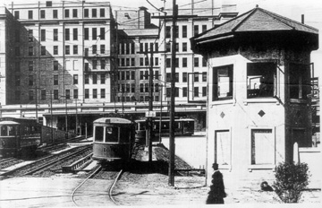

Before the Canal Subway: Public Service Terminal (1916)

By the 1910s, the intersection of Broad and Market Streets in Newark had become one of the busiest streetcar crossroads in North America. Hundreds of streetcars converged hourly from Essex, Hudson, and Union counties, creating severe surface gridlock.
To relieve the bottleneck, the Public Service Corporation of New Jersey opened the monumental Public Service Terminal on Park Place across from Military Park in 1916. Featuring both an upper-level trestle approach from Mulberry Street and a subterranean lower level fed via the two-block Cedar Street Subway tunnel from Washington Street, it marked Newark's first serious step toward grade-separated electric traction.
Building the #7 City Subway (1929–1940)
After acquiring the drained Morris Canal right-of-way, Newark began constructing the Newark City Subway in November 1929. Downtown segments were roofed over with concrete decking to carry Raymond Boulevard above, while northern sections through Branch Brook Park remained an open, landscaped rapid-transit cut.
- May 1935 (Initial Opening): Revenue streetcar service launched between Warren Street (downtown near Broad Street / Military Park) and Heller Parkway.
- June 1937 (Newark Penn Station Extension): The line pushed eastward beneath Raymond Boulevard into the brand-new Pennsylvania Railroad Station (Newark Penn Station), creating a direct subway-to-intercity rail hub.
- 1940 (Franklin Avenue Extension): Trackage expanded north past Heller Parkway to a new turnaround loop at Franklin Avenue (today's Branch Brook Park area).
Surface Feeder Lines & Subway Ramps
Unlike a closed heavy-rail metro, Public Service Coordinated Transport (PSCT) originally engineered the City Subway as an express trunk fed directly by suburban surface trolley lines. Streetcars ran along city avenues, turned down dedicated concrete ramps into the canal trench, and raced unobstructed to downtown and Newark Penn Station:
| Route | Corridor Served | Subway Connection | Transition Status |
|---|---|---|---|
| #7 City Subway | Newark Penn Station – Franklin Ave | Core exclusive subway trunk | Retained rail; upgraded to PCC cars (1954) & LRVs (2001) |
| #21 Orange | West Orange / Orange via Market & Orange Sts | Connections near Warren St / Orange St | Converted to motor bus operations in early 1950s |
| #23 Central Ave | Central Ave corridor (West Orange / East Orange) | Dedicated ramp north of Norfolk St station | Converted to bus Dec 14, 1947; ramp tracks removed |
| #29 Bloomfield | Bloomfield Ave through Bloomfield & Montclair | Ramp connection near Bloomfield Ave station | Converted to bus by 1952; corridor retained bus #29 |

The Last Surviving Rail Trunk
Throughout the late 1940s and early 1950s, Public Service systematically replaced streetcar routes with motor and all-service buses. When the last surface feeder trolleys left the streets by 1952, the grade-separated #7 City Subway stood alone—a dedicated, traffic-free rail spine whose independence made it indispensable rather than expendable.